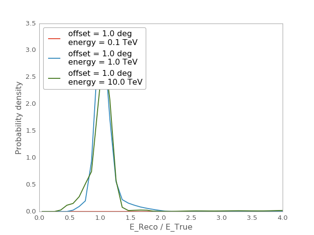
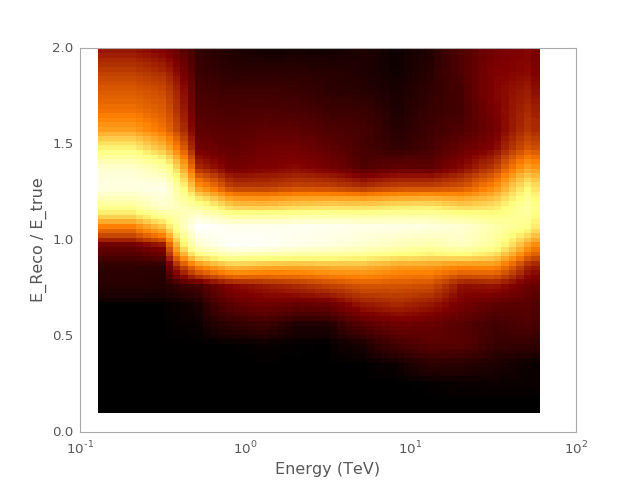
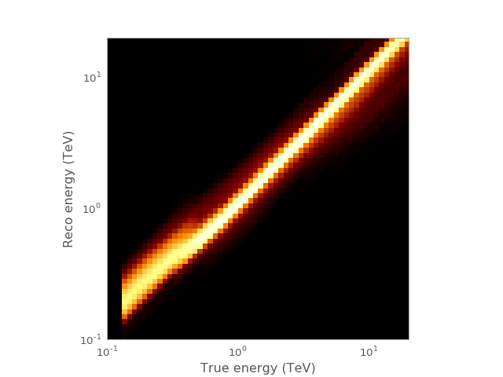

EnergyDispersion2D¶
-
class
gammapy.irf.EnergyDispersion2D(etrue_lo, etrue_hi, migra_lo, migra_hi, offset_lo, offset_hi, dispersion, interp_kwargs=None)[source]¶ Bases:
objectOffset-dependent energy dispersion matrix.
Parameters: etrue_lo :
EnergyTrue energy lower bounds
etrue_hi :
EnergyTrue energy upper bounds
migra_lo :
ndarray, listMigration lower bounds
migra_hi :
ndarray, listMigration upper bounds
offset_lo :
AngleOffset lower bounds
offset_hi :
AngleOffset lower bounds
dispersion :
ndarrayPDF matrix
interp_kwargs : dict or None
Interpolation parameter dict passed to
scipy.interpolate.RegularGridInterpolator. If you passNone, the defaultinterp_params=dict(bounds_error=False, fill_value=0)is used.Examples
Plot migration histogram for a given offset and true energy
import matplotlib.pyplot as plt from gammapy.irf import EnergyDispersion2D filename = '$GAMMAPY_EXTRA/test_datasets/irf/hess/pa/hess_edisp_2d_023523.fits.gz' edisp = EnergyDispersion2D.read(filename, hdu='ENERGY DISPERSION') edisp.plot_migration() plt.xlim(0, 4)
(Source code, png, hires.png, pdf)
Plot evolution of bias and resolution as a function of true energy for a given offset
import matplotlib.pyplot as plt import numpy as np from gammapy.irf import EnergyDispersion2D from gammapy.utils.energy import Energy from astropy.coordinates import Angle filename = '$GAMMAPY_EXTRA/test_datasets/irf/hess/pa/hess_edisp_2d_023523.fits.gz' edisp = EnergyDispersion2D.read(filename, hdu='ENERGY DISPERSION') migra = np.linspace(0.1,2,80) e_true = Energy.equal_log_spacing(0.13,60,60,'TeV') offset = Angle([0.554], 'deg') edisp.plot_bias(offset=offset, e_true=e_true, migra=migra) plt.xscale('log')
(Source code, png, hires.png, pdf)
Create RMF matrix
import matplotlib.pyplot as plt from gammapy.irf import EnergyDispersion2D from gammapy.utils.energy import EnergyBounds filename = '$GAMMAPY_EXTRA/test_datasets/irf/hess/pa/hess_edisp_2d_023523.fits.gz' edisp = EnergyDispersion2D.read(filename, hdu='ENERGY DISPERSION') e_axis = EnergyBounds.equal_log_spacing(0.1,20,60, 'TeV') rmf = edisp.to_energy_dispersion('1.2 deg', e_reco = e_axis, e_true = e_axis) rmf.plot_matrix() plt.loglog()
(Source code, png, hires.png, pdf)
Methods Summary
evaluate([offset, e_true, migra])Probability for a given offset, true energy, and migration from_fits(hdu)Create from a FITS HDU. get_response(offset, e_true[, e_reco])Detector response R(Delta E_reco, E_true) info()Print some basic info. peek([figsize])Quick-look summary plots. plot_bias([ax, offset, e_true, migra])Plot migration as a function of true energy for a given offset plot_migration([ax, offset, e_true, migra])Plot energy dispersion for given offset and true energy. read(filename[, hdu])Read from FITS file. to_energy_dispersion(offset[, e_true, e_reco])Detector response R(Delta E_reco, Delta E_true) Methods Documentation
-
evaluate(offset=None, e_true=None, migra=None)[source]¶ Probability for a given offset, true energy, and migration
Parameters: e_true :
Energy, optionalTrue energy
migra :
ndarray, optionalEnergy migration e_reco/e_true
offset :
Angle, optionalOffset
-
classmethod
from_fits(hdu)[source]¶ Create from a FITS HDU.
Parameters: hdu :
BinTableHDUENERGY DISPERSIONextension.
-
get_response(offset, e_true, e_reco=None)[source]¶ Detector response R(Delta E_reco, E_true)
Probability to reconstruct a given true energy in a given reconstructed energy band. In each reco bin, you integrate with a riemann sum over the default migra bin of your analysis.
Parameters: e_true :
EnergyTrue energy
e_reco :
EnergyBounds, NoneReconstructed energy axis
offset :
AngleOffset
Returns: rv :
ndarrayRedistribution vector
-
peek(figsize=(15, 5))[source]¶ Quick-look summary plots.
Parameters: figsize : (float, float)
Size of the resulting plot
-
plot_bias(ax=None, offset=None, e_true=None, migra=None, **kwargs)[source]¶ Plot migration as a function of true energy for a given offset
Parameters: ax :
Axes, optionalAxis
offset :
Angle, optionalOffset
e_true :
Energy, optionalTrue energy
migra :
array, list, optionalMigration nodes
Returns: ax :
AxesAxis
-
plot_migration(ax=None, offset=None, e_true=None, migra=None, **kwargs)[source]¶ Plot energy dispersion for given offset and true energy.
Parameters: ax :
Axes, optionalAxis
offset :
Angle, optionalOffset
e_true :
Energy, optionalTrue energy
migra :
array, list, optionalMigration nodes
Returns: ax :
AxesAxis
-
classmethod
read(filename, hdu=u'edisp_2d')[source]¶ Read from FITS file.
See edisp_2d format
Parameters: filename : str
File name
-
to_energy_dispersion(offset, e_true=None, e_reco=None)[source]¶ Detector response R(Delta E_reco, Delta E_true)
Probability to reconstruct an energy in a given true energy band in a given reconstructed energy band
Parameters: offset :
AngleOffset
e_true :
EnergyBounds, NoneTrue energy axis
e_reco :
EnergyBoundsReconstructed energy axis
Returns: edisp :
EnergyDispersionEnergy disperion matrix
-
{kind=link}
{kind=link}
{kind=link}
{kind=link}
{kind=link}
{kind=link}